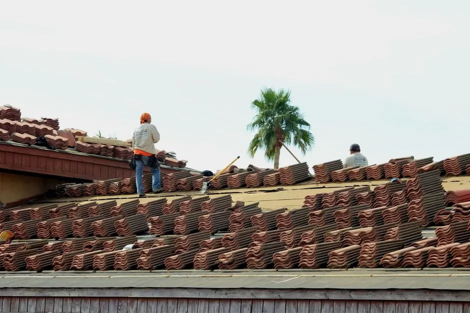

Roof leaks due to storm damage
Our inspections identify leaks early, allowing for timely repairs that prevent further damage.
Roof inspection services Texas are essential for maintaining the integrity of your roof. Our team provides the best roofing inspection in Texas, ensuring your home is safe from potential damage.
Tell us what is happening. A local dispatcher will confirm your visit shortly.
Call Now (254) 489-4621 → No spam. No obligation. Just practical help.
Roof inspection services Texas involve a thorough examination of your roofing system to identify any issues, including leaks, storm damage, or missing shingles. This service is crucial for homeowners to maintain roof longevity and safety.
Local customers need regular roof inspections due to Texas's diverse climate, which can cause wear and tear. The best roofing inspection in Texas helps prevent costly repairs down the line, ensuring your roof remains in top condition.
Our roof inspection services cover a comprehensive evaluation of your roof, including structural integrity, material condition, and potential hazards. Additional services like detailed reports or follow-up visits may be available at an extra cost.
A thorough visual inspection of all roofing materials to identify visible damage or wear.
A comprehensive report detailing the findings of the inspection, including photos and recommendations.
An evaluation of the roof's structural integrity, checking for sagging or other issues.
Assessment of roofing materials, including asphalt shingles, metal roofing, and more.
We start with a consultation to understand your concerns and schedule a convenient time for the inspection.
Our certified inspectors arrive with the right tools, such as roofing nailers and safety harnesses, to conduct a detailed evaluation.
We check for common problems like hail damage, missing shingles, and roof leaks, documenting everything for your report.
After the inspection, we provide a comprehensive report outlining any issues found and recommended actions.
We discuss the findings with you, answering any questions and outlining next steps for repairs if necessary.
Purpose-built equipment, used by trained technicians — so the job is done accurately the first time.
Used for securing shingles and roofing materials during repairs.
Essential for safely accessing roofs of various heights.
Ensures the safety of our inspectors while working on steep or high roofs.
Used for precise cutting of shingles during repairs.
The roof showed signs of missing shingles and water stains inside the home.
After inspection and repairs, the roof was restored with new shingles, preventing leaks.
The roof had multiple areas of impact from hail, leading to potential leaks.
Post-inspection, damaged areas were repaired, and the roof was reinforced.
The roof was over 15 years old with no inspections, showing signs of wear.
An inspection revealed necessary repairs, extending the roof's life for several more years.
Our roof inspection services address several common issues that can lead to costly repairs if ignored.
Ask a pro →Our inspections identify leaks early, allowing for timely repairs that prevent further damage.
We detect missing shingles during inspections and recommend immediate replacements to restore protection.
Our trained inspectors identify subtle signs of hail damage, ensuring your roof stays intact.
$180 - $450 depending on scope
Roof inspection costs in Texas typically range from $180 to $450 in 2026, depending on the roof's size and condition. Factors like accessibility and the extent of the inspection can influence pricing. Affordable roof inspection Texas services ensure that you receive value for your investment.
Investing in regular inspections helps prevent costly repairs down the line, making it a smart choice.
Larger roofs require more time and resources for inspection, increasing costs.
Older or damaged roofs may need more detailed inspections, affecting the price.
Roofs that are difficult to access may require additional equipment, raising the cost.
Most roof inspection services in Texas range from $180 to $450, depending on the size and condition of your roof.
To prepare for a roof inspection in Texas, clear the area around your home and ensure access to the roof is safe for our inspectors.
It's recommended to get your roof inspected at least once a year, especially after severe weather events common in Texas.
During a roof inspection in Texas, expect a thorough evaluation of your roofing system, focusing on common issues like storm damage and leaks.
Our roof inspection services Texas extend to various cities, ensuring that homeowners receive quality inspections tailored to local conditions. From McAllen to Wichita Falls, we are committed to providing thorough evaluations.
Contact us for comprehensive roof inspection services Texas. Ensure your home is safe and secure. Call now for a free estimate!
Request a quote (254) 489-4621 →We invite you to reach out for any roofing needs. Our team is available Monday to Friday, ready to assist you with prompt responses.